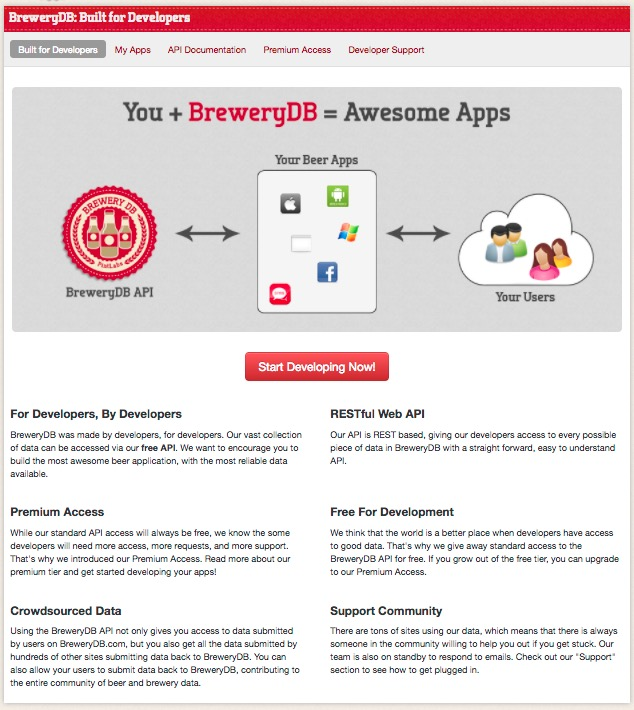
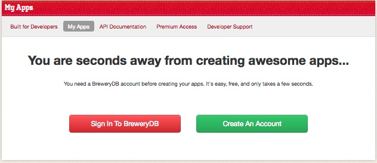
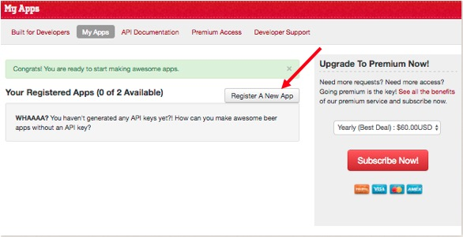

Get Your API Key
Visiting the BreweryDB Developers Page and Obtaining Your API Key
BreweryDB
To begin you will need to visit the BreweryDB Developers website. You can find the link to the right of this page under "Important Links" or your you can click here to visit the page.
Once there you will be greeted with the following page:
Once there, click on Start Developing Now! option. This will direct you to the My Apps page where you will need to create an account.
Once you've agreed to the terms and conditions, you will be redirected back to the MyApps page and you can now obtain your API Key! Simple click on the Register A New App link. You will be allowed a maximum of 2 API Keys. If you wish to obtain more, you will need to a subscribe to their Premium service which entails a cost.
After electing to register a new app, you will be asked to complete the following information
- App Name (Required)
- Description of App (Required)
- Website
- Platform
Once the information, BreweryDB will issue an API key. You will need this to access the site's API. How? Well, you'll see soon.